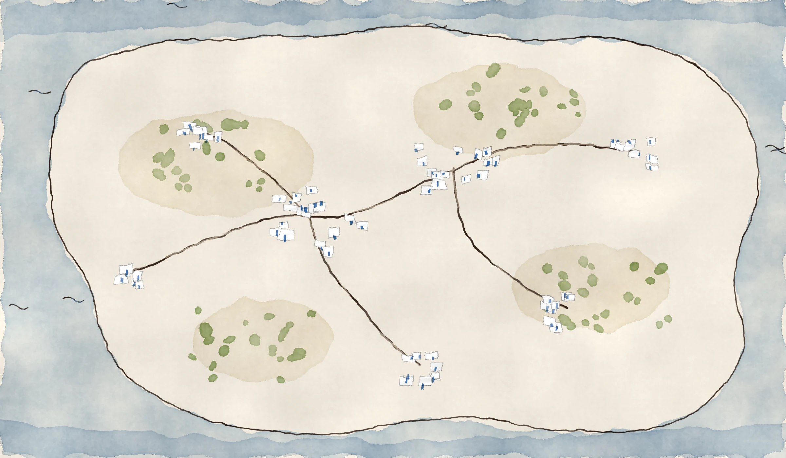

place 1
Day 1
place 2
Day 1
place 3
Day 1
You
0
readers
how we grow
Day 1
·
The Exit Plan
Where I’d find
my first readers
from zero
 You0 readershow we growYou0 readershow we grow
You0 readershow we growYou0 readershow we grow